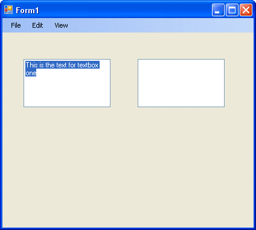
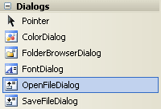
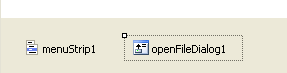
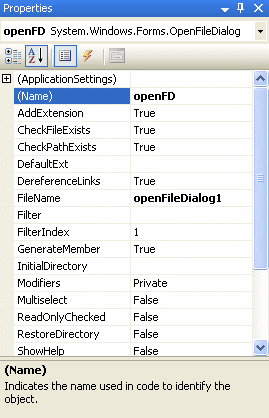
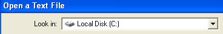

The Open File Dialogue Box
For the last project, you designed a form interface that had a File, Edit and a View menu. In this section, we'll write code so that your menu items actually do something other than displaying message boxes. In other words, the Edit > Cut menu will really cut text, and the Edit > Paste menu will really paste text.
So open up the project you completed for the previous section. Comment out or delete any message box code. (You comment out code by typing a single quote character at the start of the line. The line will then turn green, and will be ignored when the programme is run.)
We'll start with the File > Open menu.
The Open File Dialogue Box
In most programmes, if you click the File menu, and select the Open item, a dialogue box is displayed. From the dialogue box, you can click on a file to select it, then click the Open button. The file you clicked on is then opened up. We'll see how to do that from our menu. (Except, the file won't open yet - only the dialogue box will display, and then name of the chosen file. You'll learn how to open files in a later section.)
First, place two textboxes on your form. In the properties box, locate the MultiLine property. It is set to False by default (which is why you can't change the height of textboxes). Change this value to True.
Type some default text for the Text Property of textbox1. Change the Font size to 14 points.
Your form should now look something like this one:

We'll work with these textboxes when we do the Edit menu. So let's leave them for now.
When we click on File > Open from our menu, we want the Open dialogue box to appear. This is fairly straightforward in VB.NET. In fact there is even a control for it!
Open up your toolbox, and locate the control called "OpenFileDialog". You might have to scroll down to see it. But you're looking for this:

Double click the control to add one to your project.
But notice that the control doesn't get added to your form. It gets added to the area at the bottom, next to your menu control:

The shaded area surrounding the control means that it is selected. If you look on your right, you'll see the properties that you can use with the control.
Click on the Name property and change the name to openFD. When you change the name in the properties box, the name of the control at the bottom will change:

We’ll now write some code to manipulate the properties of our new control. So do the following:
- Access the code for your File > Open menu item. (To do this quickly, you can simply double click the Open item on your menu bar. Or press F7 (CTRL + ALT + 0 in version 2012) to access the Code View.)
- Click the name of your menu item from the left drop down box at the top of the code
- Then select the Click event from the drop down box to the right
- Your empty code should be this (the code below has underscore characters added, so that it can fit on this page):
Private Sub mnuOpen_Click(ByVal sender As Object,
_
ByVal e As System.EventArgs) _
Handles mnuOpen.Click
End Sub
With you cursor flashing between the two lines of your code, add the following:
openFD.ShowDialog()
When you typed a full stop after the openFD, you probably saw a list box appear. You can just double click the ShowDialog() item to add it to your code.
But this method of the OpenFileDialog control does what you'd expect it to do: Shows the dialogue box. You can even test it out right now. Press F5 to run your programme. Then click the Open item on your File menu. You should see an Open dialogue box display.
Return to the design environment, and we'll explore some more things you can do with this Dialogue box control.
No more reading these lessons online - get the eBook here!
The Initial Directory
You can set which directory the dialogue box should display when it appears. Instead of it displaying the contents of the "My Documents" folder, for example, you can have it display the contents of any folder. This done with the Initial Directory property. Amend your code to this:
openFD.InitialDirectory = "C:\"
openFD.ShowDialog()
Run your programme again, and see the results in action. You should see the
contents of the "C" folder on your hard drive (if you root folder
is called something else, change the code above).
The Title Property
By default, the dialogue box will display the word "Open" as a caption
at the top of your dialogue box. You can change this with the Title property.
Add the line in Bold to your code:
openFD.InitialDirectory = "C:\"
openFD.Title = "Open a Text File"
openFD.ShowDialog()
Run your code again, and Click File > Open from your menu. You should see this at the top of the Open dialogue box:

In the next parts of this tutorial, we'll see how to change the Filter property, and how you can select a file from the list.